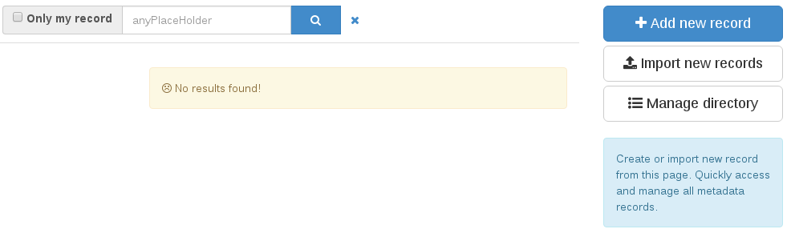
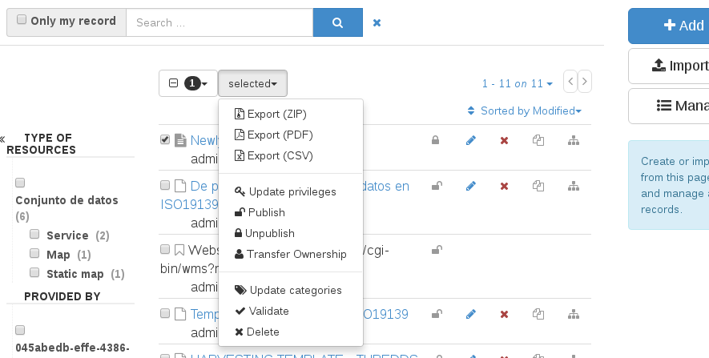

Редактировать¶
Для добавления новых метаданных необходимо войти в панель управления редактором: http://localhost:8080/geonetwork/srv/eng/catalog.edit#/board
Там вы можете нажать синюю кнопку «Добавить новую запись» справа, чтобы создать новые метаданные. В зависимости от схемы, выбранной на предыдущих шагах, вам будут предложены разные шаблоны для запуска новых метаданных.

После выбора шаблона и нажатия зеленой кнопки «Создать» справа откроется редактор с вашими вновь созданными метаданными. Вы можете заполнить и изменить нужные значения, а затем щелкнуть синий значок сохранения.

После сохранения и закрытия редактора ваши метаданные уже находятся в вашем каталоге. Вы можете найти его на главной странице или в панели инструментов редактора.
Если вы хотите, чтобы ваши метаданные были общедоступными, вам также следует изменить привилегии, чтобы их могла видеть группа «Все», представляющая анонимных пользователей. Для этого вернитесь в панель управления редактором: http://localhost:8080/geonetwork/srv/eng/catalog.edit#/board
Выберите метаданные, которые вы хотите опубликовать, и в верхнем меню выберите опцию «Опубликовать». Теперь ваши метаданные общедоступны в вашем каталоге. Если вы входите с анонимной вкладкой, ваши метаданные видны.
Подробнее о Редактирование метаданных.